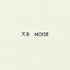

strange music page
japanese strange music * * * Na - No
- Nav Katze
- 成田忍
- NOISE
- NOVO TONO
#SWITCHレーベルから出てた、Nav KatzeのデビューEPと1stアルバムのカップリング再発。渋谷ディスクユニオンのセールで\500。
最近はすっかりテクノな人達になっちゃってますけど、この頃はまだポリスしてます。1st EPの「Nav Katze」の音が微妙な感じで結構好きです。レンジの狭い音と少ない音数（ほとんどオカズのないドラム！）、ほんの少しポップなメロディーとフラットなボーカル、妙な緊張感。この頃の方が特徴有る音を作ってたように思います。(2002.10.21)
- 御七夜の夢
- 夕なぎ
- ゆりかご
- 入浴
- 愛し合う夜
- 水のまねき
- 銀の羽の戦士
- 螺旋階段
- 赤い真夏
- 闇と遊ばないで
- 黒い瞳
- 病んでるオレンジ
- 駆け落ち
- パヴィリオン
track 1-10. OyZaC (1997)
track 11-14. Nav Katze (1996)
- 飯村直子 (guitars,vocals)
- 山口美和子 (bass,vocals)
- 古舘詩乃（drums)
- 窪田晴男 (guitars on 2.)
- 岡田徹 (piano,oboe,bagpipe,keyboards on 10.)
- 土橋安騎夫 (programming on 1-10.)
CONSIPIO RECORDS: COCS-2003 (2001.8.23)
- Gentle People/Ready to go
- Disjecta/Lilac moon light
- Disjecta/Tightrope
- Sun Electric/Borderless #2
- Disjecta/Tiny cog
- Seefeel/Happier...
- u-ZIQ/Happy!
- Autechre/Happy? -qunk mix Dub
VICTOR ENTERTAINMENT: VICL-60025 (1997.5.21)
#ヤフーオークションにて入手、元
URBAN DANCEの成田忍さんのソロアルバムです。
で中味なんですけど......まんま
URBAN DANCEです。
ほんとはもうちょい何か期待してたんですけど。80年代まんまの感覚かな？ちょっと音もちゃっちい感じで、残念。
まぁでもURBAN DANCE好きな方には良いかもしれないです、限定盤みたいなんでフツーには売ってないみたいですけど。(2001.9.1)
- ROSE DE SAHARA
- GREAT SWINDLER
- BLANK GENERATION
- HELLO JUDAS
- JERICHO
- THE RAPTURE OF THE DEEP (ANGELIC DOLPHINS MIX)
- 成田忍 (composed,performed)
- 沖山優司 (bass on 1.)
- YOSHIKO (voice on 6.)
SLAPP HAPPY RECORDS: SNB-1001 (1994)
#工藤冬里(
maher shalal hash buz)と大村礼子の80年代初期のバンドです。
工藤冬里の壊れたよーなオルガンが鳴り響く中に、大村礼子の冷たいトーンの声が木霊するという・・・60年代のサイケ(amon duulとか)とか80年代ノイズ(TGとかSPKの1stとか)にも負けないくらいの内容。ギターとかもグシャグシャ鳴ってます。
聴いてて怖くなってきます、曲と曲の合間でほっとするような。フツーの方にはおすすめしませんが、久々に凄まじいものを聴いたような気がします。
バックのザラザラした感触に対して、大村礼子の声はなんだか陶磁器みたいな透明な感じがします。(2002.10.31)
pataphysique records

- 死
- 水
- 地球は青い
- 天皇
- 羊
-
-
track 6. 1980.1.16 @ 吉祥寺minor
track 7. 1979.12.15 @ tokyo rockabilly club
- 大村令子 (vocals,guitars,trumpet)
- 工藤冬里 (organ,drums)
- 渡辺敏子 (drums on 2.)
PATAPHYSIQUE RECORDS: DD-005
#なんだか物凄い人選です。PHEWがバンド組んで活動ってだけでも凄そうなのにGROUND-ZERO(大友)+BOREDOMS(山本)って。
PHEWさんが歌ってしまうだけで、その色が強くなってしまうのですけど。作曲もほぼメンバー全員が関わってるみたいです。
特に山本精一さんの歌う「夢の半周」はなんだか奇跡的な曲。これが有ったからきっと後の
羅針盤や
山本精一 & PHEWが有り得たんだと思います。
- イントロダクション
- 遠くの喝采
- ここからの出発
- おわらないうずまき
- ささえきれない暗さ
- ダイナマイト・サマー
- 夢の半周
- ロボット・ロンド
- 白昼夢
- エンゼル
- 余白のうた
- うみへいこう
- もういちど眠ろう
- Phew (vocals)
- 山本精一 (guitars,mandolin,vocals)
- 大友良英 (turntables)(electric guitar on 2.7.8.)
- えとうなおこ (synthesizers,piano,backing vocals)
- 西村雄介 (bass,backing vocals)(acoustic guitar on 12.)
- 植村昌弘 (drums,percussions,backing vocals)
- 勝井祐二 (violin on 4.6.7.)
- 藤原弘昭 (banjo on 2.)
- 長蔦寛幸 (edit on 1.2.)
creativeman disc: CMDD-00028 (1996)